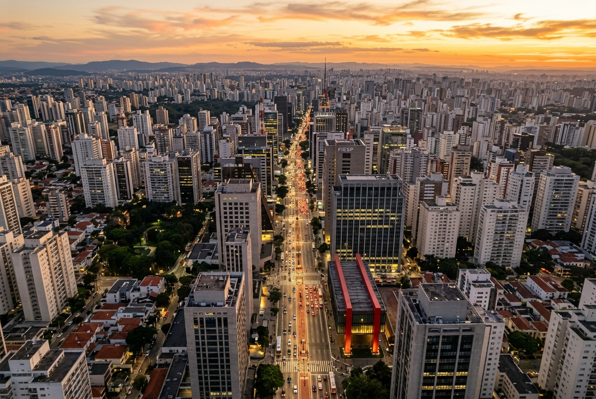
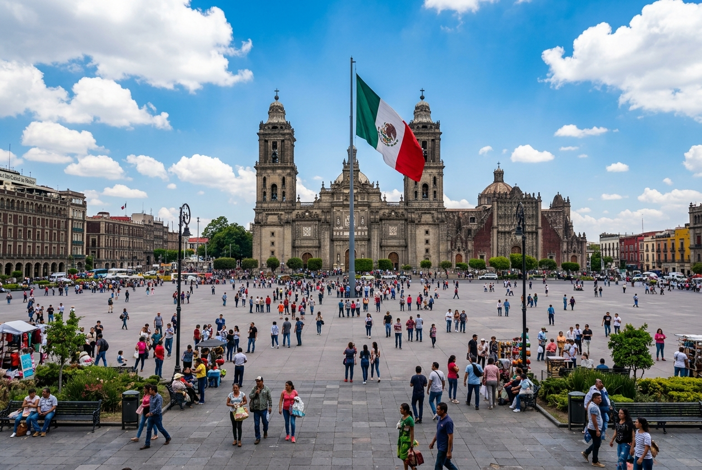

RANK 1
볼거리
센소지 사원, 도쿄 타워, 시부야 스크램블 교차로
먹거리
정통 스시, 돈코츠 라멘, 바삭한 텐동
RANK 2
볼거리
유네스코 지정 레드 포트, 꾸뚭 미나르, 인디아 게이트
먹거리
풍미 가득한 버터 치킨, 화덕에 구운 난, 마살라 차이
RANK 3
볼거리
와이탄 역사 야경, 전통 정원 예원, 동방명주 탑
먹거리
육즙이 넘치는 샤오롱바오, 상하이 털게 요리, 훙사오러우
RANK 4
볼거리
무굴 제국의 랄바그 요새, 아산 만질 핑크 궁전, 사다르가트 선착장
먹거리
향신료가 가미된 카치 비리야니, 매콤새콤 푸치카, 모로 포라우
RANK 5

볼거리
이비라푸에라 공원, 번화한 파울리스타 대로, 상파울루 미술관(MASP)
먹거리
전통 콩고기 스튜 페이조아다, 바베큐 슈하스코, 바삭한 튀김 만두 파스텔
RANK 6

볼거리
국립 인류학 박물관, 소칼로 역사 광장, 아즈텍 테오티우아칸 피라미드
먹거리
현지식 정통 타코, 옥수수 껍질로 찐 타말레스, 멕시코 전통 수프 포솔레
RANK 7

볼거리
기자 대피라미드 & 스핑크스, 이집트 문명 박물관, 칸 엘-칼릴리 전통 시장
먹거리
이집트의 대표 서민 음식 코샤리, 병아리콩 크로켓 타아메야, 풀 메다메스
RANK 8
볼거리
뉴욕 타임스 스퀘어, 상징적인 자유의 여신상, 뉴욕의 허브 센트럴 파크
먹거리
뉴욕식 조각 피자, 쫀득하고 꽉 찬 크림치즈 베이글, 정통 뉴욕 치즈케이크
RANK 9
볼거리
레키 보존 센터 캐노피 워크, 나이키 미술관, 타콰 베이 비치 섬
먹거리
매콤하고 중독적인 졸로프 라이스, 나이지리아식 꼬치구이 수야, 콩 튀김 아카라
RANK 10
볼거리
스페인 식민지풍 성벽 도시 인트라무로스, 리잘 공원, 마닐라 대성당
먹거리
간장 식초 고기 조림 아도보, 새콤하고 얼큰한 시니강 수프, 통돼지 구이 레촌